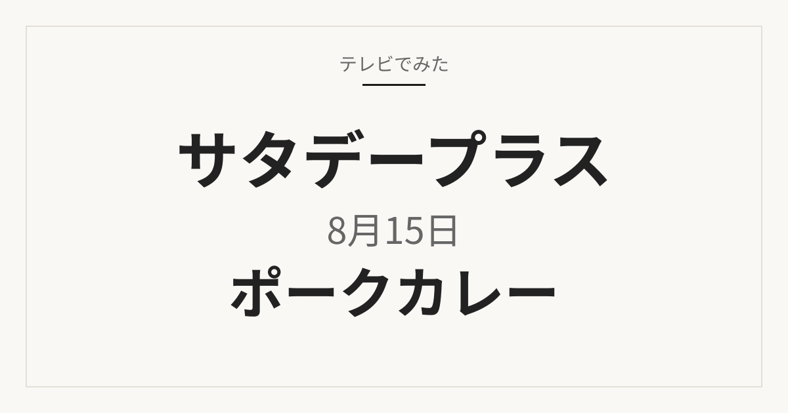

サタプラ レトルトカレー／サタプラ ポークカレー｜2026年8月15日

2026年8月15日放送の「サタデープラス」では、レトルトポークカレーを特集。サタプラ独自の方法で10時間以上調べ、①具材の満足度 ②豚肉の味 ③ソースの味 ④コストパフォーマンス ⑤ごはんとの相性を清水アナウンサーが確認したうえで、サタプラ的オススメが紹介されました。
この記事はMBS公式の放送記事を基準に、番組で紹介された商品名と放送時点の価格を確認しています。店頭や通販では在庫切れ、販売終了、仕様・価格変更の場合があります。楽天市場ではセット販売や送料により放送時点の価格と異なることがあるため、数量と総額をご確認ください。
1位・放送時価格 790円（番組調べ）
ニシキヤキッチン
1．角煮とたまごのスパイシースープカレー 330g
MBS公式では1位として紹介された、内容量330gのスープカレーです。メーカー公式では、角切りの豚肉、ゆでたまご、れんこんやにんじんなどの大きめ野菜を煮込んだ辛口のスープカレーと案内されています。通常のルーをご飯にかけるタイプではなく、器に盛り付けるスープカレーとして使う商品です。
向いている用途：具材の量を優先して1食分を選びたいときや、ご飯にかけるカレーではなくスープカレーを用意したいときに候補になります。
選ぶポイント：330gと量が多めです。辛口表示なので、甘口や子ども向けを探している場合は合いません。同じニシキヤの「ポークカレー 180g」とはタイプも量が違うため、商品名と内容量を確認してください。
使用時の注意：温め方、アレルギー原材料、保存方法はパッケージ表示に従ってください。卵や豚肉などを含む商品のため、表示の確認が必要です。
楽天で見る
2位・放送時価格 350円（番組調べ）
無印良品
2．ごろごろ野菜と豚ひき肉の大盛りカレー 300g
MBS公式では2位として紹介されました。正式名称は「素材を生かした ごろごろ野菜と豚ひき肉の大盛りカレー」で、内容量は300g（1人前）です。メーカー公式では、大きくカットしたじゃが芋とにんじん、豚ひき肉を使った具だくさんの大盛りカレーと案内されています。
向いている用途：野菜の量も含めて1人前を多めに食べたいときや、大きな肉塊よりひき肉と野菜のカレーを用意したいときに向きます。
選ぶポイント：ひき肉タイプなので、角煮やブロック肉を求める場合は別の商品が候補です。放送時点の価格は350円（番組調べ）ですが、店頭・通販ではセット販売や価格差が出ることがあります。
使用時の注意：温め方はパッケージ表示に従ってください。楽天市場では複数個セットの出品もあるため、入数と送料を確認してから選んでください。
楽天で見る
3位・放送時価格 520円（番組調べ）
ニシキヤキッチン
3．ポークカレー 中辛 180g
MBS公式では3位として紹介された、内容量180gの中辛ポークカレーです。メーカー公式では、炒めたたまねぎやはちみつ、フルーツの甘みが溶け込んだまろやかなソースで豚肉を煮込んだ定番カレーと案内されています。ご飯にかける一般的なレトルトカレーのサイズです。
向いている用途：いつものご飯にかける王道のポークカレーを用意したいときや、330gのスープカレーより小さい1人前を選びたいときに候補になります。
選ぶポイント：同じニシキヤでも「角煮とたまごのスパイシースープカレー」とはタイプが違います。南インド風など別シリーズのポークカレーもあるため、商品名「ポークカレー」と内容量180g、中辛表示を確認してください。
使用時の注意：温め方と原材料表示はパッケージに従ってください。乳成分や小麦などを含む商品のため、アレルギー表示の確認が必要です。
楽天で見る
4位・放送時価格 473円（番組調べ）
ハウス食品
4．カレーでニクる。豚肉 160g
MBS公式では4位として紹介された、内容量160gのレトルトカレーです。メーカー公式では、豚肉を味わうことに寄せた商品で、玉ねぎの旨みと生姜の香りが特徴のスパイスカレーと案内されています。箱のまま電子レンジで温められるタイプです。
向いている用途：ソース量より肉を中心に選びたいときや、箱のままレンジで温めたいときに候補になります。
選ぶポイント：同じシリーズに牛肉版があります。パッケージが似ているため、「豚肉」と内容量160gを確認してください。160gは一般的なレトルトより少なめなので、ご飯の量に合わせて選ぶと失敗しにくいです。
使用時の注意：温めは箱のままレンジか湯せんなど、表示の方法に従ってください。牛肉版と取り違えないよう、購入前に商品名を再確認してください。
楽天で見る
目的別に選ぶならどれ？
具材の量を優先したい
「角煮とたまごのスパイシースープカレー」は330gで、角切り豚肉とゆでたまご、大きめ野菜が入るスープカレーです。「ごろごろ野菜と豚ひき肉の大盛りカレー」は300gで、じゃが芋・にんじんとひき肉の大盛りタイプです。肉塊か、野菜とひき肉かで分かれます。
いつものご飯にかけるカレーを探している
「ニシキヤ ポークカレー 中辛 180g」は、一般的な1人前サイズのルー型カレーです。スープカレーや大盛りタイプではなく、いつもの盛り付けで使いたい場合の候補です。
肉を中心に選びたい
「カレーでニクる。豚肉」は、メーカー公式でも豚肉を味わうことに寄せた商品として案内されています。同じシリーズの牛肉版とパッケージが近いので、豚肉であることだけは購入前に確認してください。
まず試しやすい価格帯を見たい
MBS公式の放送時点価格（番組調べ）では、無印の大盛りカレーが350円と相対的に抑えめです。ただし通販では送料やセット単位で総額が変わるため、1袋あたりの金額で比べてください。
よくある質問
サタプラで紹介されたレトルトポークカレーはどれ？
2026年8月15日のサタデープラスではレトルトポークカレーが特集されました。この記事では、MBS公式の放送記事で確認できた商品のうち、楽天市場で同一商品を確認できた4点をまとめています。
サタプラ レトルトカレーの放送日は？
2026年8月15日（土）放送のサタデープラスです。テーマはレトルトポークカレーでした。
放送時点の価格はいくら？
MBS公式記事（番組調べ、2026年8月15日現在）では、角煮とたまごのスパイシースープカレー790円、無印の大盛りカレー350円、ニシキヤのポークカレー520円、カレーでニクる。豚肉473円です。現在の価格や取り扱いは販売ページでご確認ください。
楽天市場でも同じ価格で買える？
同じとは限りません。楽天市場では複数個セットで販売され、商品代とは別に送料がかかる場合もあります。店頭購入と通販で使い分けてください。
出典と確認方法
番組名、放送日、紹介された商品名、放送時点の価格はMBS公式記事を基準に確認しました。用途と選び方は、効果を断定しないよう公開情報をもとに編集部で整理しています。
商品リンクには広告リンクを含みます。番組映像や字幕は転載せず、公開情報をもとに独自に要約しています。